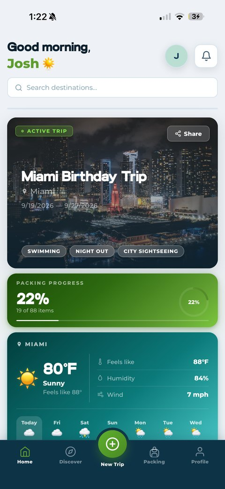

👶 Infants & Babies (0–1)
 Diapers
Diapers
 Stroller
Stroller
🧸 Toddlers (1–3)
 Baby Wipes
Sippy Cups
Toddler Snacks
Portable Night Light
Travel Potty Seat
Stroller or Carrier
Baby Wipes
Sippy Cups
Toddler Snacks
Portable Night Light
Travel Potty Seat
Stroller or Carrier
🎒 Kids (4–9)
🎧 Tweens & Teens (10+)
🩹 Whole Family: Health & Documents
🍪 Whole Family: Snacks & Backup

One list the whole family can see
Once more than one person is packing for a trip, things get doubled or dropped — two sunscreens show up, nobody grabs the thermometer. Packmates AI keeps one live list everyone in the family can open from their own phone.
Share it with your partner, or let an older kid handle their own section, and watch items get checked off in real time as people actually pack them.
- Share the list so packing isn't a one-person job
- Everyone sees what's already packed, so nothing gets doubled or missed
- Add a splash pad or museum day and the list updates with it automatically
Family Packing FAQ
What should be on a family packing list?
A family packing list should cover kid and baby essentials (diapers, comfort items, medication), documents for every family member, car or flight entertainment, health basics like a first aid kit, and snacks or spill backups. Most families also benefit from a shared list everyone can check off from their own phone.
What do kids need most when packing for a family vacation?
Beyond clothes, kids need their comfort item (stuffed animal or blanket), a few entertainment options that work offline, snacks, a change of clothes within reach for spills or accidents, and any regular medication. Packing one extra outfit per child than you think you need covers most surprises.
How do you keep a family from overpacking or double-packing the same items?
The easiest fix is one shared packing list that every adult (and older kid) can see and check off in real time, instead of each person packing from memory. That way sunscreen doesn't get packed twice while swim diapers get forgotten entirely.
Do babies and toddlers need a separate packing list?
It helps to keep baby and toddler items in their own section, since they're easy to forget until you need them: diaper bag, bottles or formula, pacifiers, a travel stroller or carrier, and baby-safe sunscreen. Pack those first, since they're the hardest to buy last-minute while traveling.
Build your family's list in seconds
Packmates AI generates a packing list for your exact trip and ages, then syncs it live with everyone in the family — so packing day is a shared list, not a solo scramble.
Try it free